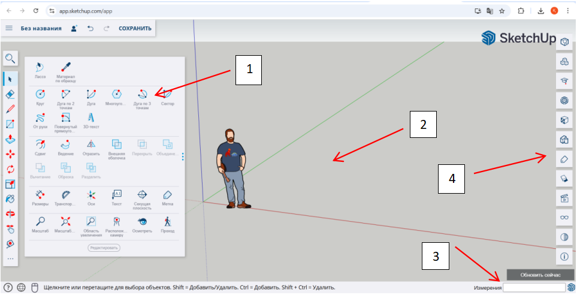

Кіріспе және құралдар панелімен танысу
SketchUp – бұл үшөлшемді (3D) модельдеу бағдарламасы. Бұл бағдарлама ғимарат, жиһаз, бөлме макеті, ойын нысандары және түрлі жобалар жасауға арналған. Толығырақ: https://skillbox.ru/media/design/prosto-o-sketchup/
Интерфейсінде ең маңызды бөліктер:
- Toolbars (Құралдар панелі) — сурет салу мен редакциялау құралдары.
- Drawing area (Сызу аймағы) — сіз жұмыс істейтін орын.
- Measurements box (Өлшем жолағы) — нақты өлшемдерді көрсетуге мүмкіндік береді.
- Default Tray (оң жақ панель) — Материалдар, компоненттер, қабаттар туралы ақпарат.
Маңызды құралдар:
Практика:
a. Қарапайым куб пен цилиндр жасау
- Rectangle құралы арқылы төртбұрыш салыңыз
- Push/Pull арқылы оны көтеріп, кубқа айналдырыңыз
- Circle құралын қолданып шеңбер салыңыз
- Push/Pull арқылы цилиндр жасаңыз
b. Терезе формасын салу. Құралдар: Rectangle, Eraser
- Rectangle құралымен тікбұрышты терезе негізін сызыңыз.
- Қажетсіз сызықтарды Eraser арқылы өшіріңіз.
Қозғалыс және өлшемдер
SketchUp – көрініс пен кеңістікте еркін қозғалуға мүмкіндік беретін негізгі құралдар:
| Құрал | Перне | Мақсаты | Қолдану |
|---|---|---|---|
| Orbit | O | Модельді айналдыру | Тінтуірдің дөңгелегін басып тұрып, тінтуірді жылжыту. |
| Pan | H | Ортада көлденең/тік қозғалу | Shift пернесін басып тұрып, тінтуірдің дөңгелегін басу. |
| Zoom | Mouse scroll | Жақындату немесе алыстау | Тінтуірдің дөңгелегін айналдырыңыз (алға – жақындатады, артқа – алыстатады). |
Өлшеммен жұмыс
Модельдеудің басты артықшылығы – дәл өлшемде жұмыс жасау. SketchUp-та әрбір сызық, нүкте немесе фигура нақты мәнмен өлшенеді.
Measurements Box (Өлшем жолағы)
Экранның төменгі оң жағындағы өлшем жолағы сіз жасаған фигуралардың нақты өлшемін көрсетеді немесе жазуға мүмкіндік береді. Мысалы: Line құралымен сызық салып, аяқтағаннан кейін «5m» деп жазсаңыз – ол сызық 5 метр болады.
Бірліктерді таңдау
SketchUp-та өлшем бірліктері метр, миллиметр, дюйм сияқты әртүрлі болуы мүмкін. Оны өзгерту үшін:
Window → Model Info → Units мәзірінен керекті өлшем бірлігін таңдауға болады.
Практикалық кеңестер:
Тапсырма:
- 5м х 5м көлемінде бөлменің төртбұрышты макетін жасаңыз.
- Rectangle құралымен төртбұрыш сызыңыз.
- Өлшемін автоматты түрде енгізіңіз: 5,5 → Enter (5м x 5м).
- Push/Pull арқылы 3м биіктік беріңіз.
- Orbit пен Zoom арқылы макетті әр бұрыштан қарап шығыңыз.
Жай үстел жасау:
Құралдар: Rectangle, Push/Pull, Line
Қисықтар мен доғалар
Arc (Доға) құралы
Arc құралы құралдар панелінде орналасқан немесе пернетақтадан ‘A’ әрпін басу арқылы іске қосылады.
Қолдану тәсілі:
Arc құралын қолданған соң, егер тұйықталған аймақ шықса, оны Push/Pull арқылы үшөлшемді етіп көтеруге болады.
Circle (Шеңбер) құралы
Circle құралы да панельде орналасқан немесе ‘C’ пернесін басу арқылы іске қосылады.
Қолдану тәсілі:
Circle құралы көбіне цилиндр, дөңгелек үстел, шеңберлі терезе сияқты элементтер жасау үшін қолданылады.
Практикалық қолдану мысалдары
| Модель бөлігі | Қолданылатын құрал | Қолдану тәсілі |
|---|---|---|
| Терезенің доғасы | Arc | Қабырға шетіне доға сызу, Push/Pull көмегімен қашау |
| Арка (кіреберіс) | Arc + Rectangle | Тіктөртбұрыш үстіне доға сызу, төменгі бөлікті өшіру |
| Дөңгелек үстел | Circle | Шеңбер сызу, Push/Pull арқылы көтеру |
| Есіктің эллипстік бөлігі | 2 Arc | Екі доға қосып эллипс жасау |
Қисықтарды өңдеу кеңестері
Тапсырма:
- Үйдің қабырғасына терезе мен есік эскизін сызыңыз (қисық пен тік сызықтарды қолдана отырып).
- Арка жаса: Rectangle құралымен 2x3 м тіктөртбұрыш сыз. Arc құралымен жоғарғы шетіне доға сызып, арка пішінін жаса.
- Төменгі тікбұрыш бөлігін өшіріп, Push/Pull көмегімен биіктік бер.
Push/Pull және Extrude
Push/Pull — SketchUp-тың ең негізгі және қуатты құралдарының бірі. Ол жазық бетті (face) үшөлшемді пішінге (көлемге) айналдыруға немесе керісінше, пішіннен бөлікті алып тастауға мүмкіндік береді.
Құралды қолдану жолы:
Қосымша кеңестер:
Ұсынылатын бейнесабақтар:
Тапсырма
1. Ас үй үстелі:
- Төртбұрыш салу: Rectangle құралымен 1.2м x 0.6м өлшемінде төртбұрыш салыңыз.
- Қалыңдық беру: Push/Pull құралымен үстелдің бетіне 0.05м қалыңдық қосыңыз.
- Аяқтарын жасау: Әр бұрышқа 0.05м x 0.05м өлшемінде төртбұрыштар салып, оларды 0.7м биіктікке көтеріңіз.
2. Орындық:
- Орындықтың отыратын бөлігін салу: Rectangle құралымен 0.4м x 0.4м өлшемінде төртбұрыш салыңыз.
- Қалыңдық беру: Push/Pull құралымен 0.03м қалыңдық қосыңыз.
- Аяқтарын жасау: Әр бұрышқа 0.03м x 0.03м өлшемінде төртбұрыштар салып, оларды 0.45м биіктікке көтеріңіз.
- Арқалық жасау (қалауыңызша): Орындықтың артқы жағына 0.4м x 0.05м өлшемінде төртбұрыш салып, оны 0.4м биіктікке көтеріңіз.
Геометриялық объектілерді редакциялау
Негізгі құралдар
| Құрал | Перне | Қолданылуы | Кеңестер |
|---|---|---|---|
| Move (Жылжыту) | M | Нысанды немесе оның бөлігін бір орыннан екінші орынға жылжыту | - Нысанды таңдаңыз, содан кейін жылжыту үшін бір нүктені басып, қажетті бағытқа апарыңыз. - Ctrl пернесін басу арқылы көшірме жасауға болады. |
| Rotate (Бұру) | Q | Нысанды белгілі бір бұрышқа бұру | - Нысанды таңдаңыз, бұру осін орнатыңыз, содан кейін бұру бұрышын енгізіңіз немесе тышқанмен бұрыңыз. - Ctrl пернесін басу арқылы бұрылған нысанның көшірмесін жасауға болады. |
| Scale (Масштабтау) | S | Нысанның өлшемін үлкейту немесе кішірейту | - Нысанды таңдаңыз, масштабтау тұтқаларын пайдаланып қажетті өлшемге өзгертіңіз. - Shift пернесін басу арқылы пропорцияны сақтау. - Ctrl пернесін басу арқылы орталықтан масштабтау. |
Ұсынылатын бейнесабақтар
Тапсырма
"Шағын үй моделін жасау"
Мақсаты: Жылжыту, бұру және масштабтау құралдарын қолдана отырып, шағын үй моделін құру.
1. Негізгі қабырғаларды салу:
- Rectangle құралын пайдаланып, 5м x 5м өлшемінде төртбұрыш салыңыз.
- Push/Pull құралымен қабырғаларды 3м биіктікке көтеріңіз.
2. Терезе мен есік жасау:
- Қабырғада Rectangle құралымен терезе мен есік орындарын белгілеңіз.
- Push/Pull құралымен оларды ішке қарай 0.2м тереңдікке енгізіңіз.
3. Шатыр қосу:
- Line және Move құралдарын пайдаланып, шатыр пішінін жасаңыз.
- Rotate құралымен шатырды қажетті бұрышқа бұрыңыз.
4. Жиһаз қосу:
3D Warehouse немесе өзіңіз жасаған компоненттерді пайдаланып, үй ішіне жиһаз орналастырыңыз. Scale құралымен жиһаздың өлшемін реттеңіз.
5. Қорытынды:
Orbit, Pan, Zoom құралдарын пайдаланып, модельді әр түрлі бұрыштан қарап шығыңыз. Қажет болса, Materials құралымен текстуралар қосыңыз.
Материалдар мен текстуралар
1. Материалдар дегеніміз не?
Материалдар — бұл модельдің бетіне қолданылатын түс немесе текстура. Олар модельге шынайы көрініс береді. Мысалы, кірпіш, ағаш, әйнек сияқты материалдар.
2. Материалдарды қолдану
3. Материалдарды өңдеу
4. Жаңа материал жасау
Ұсынылатын бейнесабақтар
Тапсырма
5x5 метрлік бөлме моделін жасап, оған материалдар мен текстуралар қолдану:
- 5x5 метрлік бөлмені салыңыз.
- Қабырғаларға кірпіш текстурасын қолданыңыз.
- Еденге ағаш текстурасын таңдаңыз.
- Төбеге ақ түс немесе басқа материал қолданыңыз.
- Терезе мен есікке әйнек немесе ағаш текстурасын қолданыңыз.
- Жаңа материал жасап, оны бөлменің бір бөлігіне қолданыңыз.
Топтар мен компоненттер
Топ
Топ — бірнеше геометриялық элементтерді біріктіріп, бір бүтін нысан ретінде сақтау әдісі.
Артықшылықтары:
Қолдану тәсілі:
Компонент
Компонент — қайта пайдалануға болатын, бірегей нысан.
Артықшылықтары:
Қолдану тәсілі:
Топ пен компоненттің айырмашылығы
| Қасиет | Топ (Group) | Компонент (Component) |
|---|---|---|
| Өзгерістерді тарату | Тек бір топқа әсер етеді | Барлық көшірмелерге әсер етеді |
| Қайта пайдалану | Қолмен көшіру қажет | Қайта пайдалану үшін оңтайлы |
| Модель көлемі | Әр топ жеке жадыда сақталады | Бір компонент жадыда бір рет сақталады |
Ұсынылатын бейнесабақтар
Тапсырма
Диван моделін жасап, оны Component ретінде сақтап, бөлмеге бірнеше рет қойыңыз:
- 5м x 5м өлшемдегі бөлмені жасаңыз.
- Диван моделін жасап, оны компонент ретінде сақтаңыз.
- Диван компонентін бөлменің әр бұрышына орналастырыңыз.
- Бір диванның түсін өзгертіп, барлық көшірмелердің де өзгергенін бақылаңыз.
- Жарық шамы моделін жасап, оны топ ретінде сақтаңыз.
- Жарық шамын бөлменің төбесіне орналастырыңыз.
«Ең креативті бөлме» байқауы
Қорытынды тапсырма: "Менің бөлмемнің 3D макеті"
Тапсырма шарты:
- Бөлме жасау:
- 5x5 м немесе өз қалауынша бөлменің сызбасын жасаңыз.
- Қабырғалар мен терезелерді салу (Arc немесе Rectangle арқылы).
- Есікті сызып, Push/Pull көмегімен ішке қарай «тесіңіз».
- Жиһаз жасау:
- Кемінде 3 жиһаз түрін жасаңыз: кереует, үстел, орындық, кітап сөресі т.с.с.
- Әр жиһазды компонент етіп жасаңыз.
- Бір жиһазды бірнеше рет көшіріп, бөлменің әр жеріне қойыңыз.
- Материал қолдану:
- Қабырғаларға қалаған текстураны (кірпіш, бояу) қолданыңыз.
- Еденге ағаш немесе паркет текстурасын таңдаңыз.
- Жиһаздарға түрлі түстер мен материалдарды қолданыңыз.
- Барлық нысандарды логикалық түрде топтаңыз:
- Бөлме – бір Group
- Әрбір жиһаз – Component
- Терезе мен есік те – бөлек компоненттер
Критерий
| Критерий | Балл |
|---|---|
| Бөлме сызбасы дұрыс, пропорция сақталған | 10 |
| 3D пішіндер дұрыс жасалған (Push/Pull) | 10 |
| Құралдарды дұрыс қолдана алған | 10 |
| Материалдар мен текстуралар қолданылған | 10 |
| Компонент пен топтар қолданылған | 10 |
| Жалпы көркемдік және шығармашылық шешім | 10 |
| Барлығы | 60 |